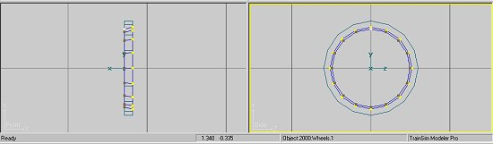
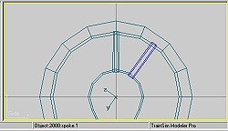

Constructing A Steam Loco Using Train Sim Modeler
Part 5
by Richard Osborne
Spoked Wheels
Knees trembling? No need, spoked wheels are very simple to make in TSM. For an express train rushing past I don't suppose they're necessary, you need impressions of speeding trains. For a small, shunting engine which will be viewed closely & often; detail & impressions are necessary.
Again it's a sequence - stick to it. Making these spoked wheels will be simpler than working out how to texture quartered disc wheels. You should have got to grips with the program so I won't spend too long on the proceedure.
I've loaded the wheels we've already built - that way the diameter must be right! Strip off the flat faces leaving only the rim. Although not strictly necessary it'll make life easier to move 'y' & 'z' axes to 0. Copy, paste & scale in 'y' & 'z' to make the inner rim.
We have to duplicate the draft angle of the wheel, on the prototype it's there for the casting process. It's a gift for us as we can texture the wheel faces from the side only. We'll use front/rear texture for the rims. Select the outside points of the inner rim & scale them. You'll need to keep all the draft angles in the same direction - just think of making sand castles.

This will be facing outwards so - 'polygon' mode, 'flip all'.
We'll have to build up the rim faces. Load a 4 sided polygon & position it on one segment of the rim. We don't have to do this 32 times!
Copy the polygon & paste it; go into 'transform' & rotate it. A little maths tells me we need to rotate it 22.5 degrees. Repeat until 1/2 the rim is completed. Try not to duplicate any of the segments. When 1/2 the rim is complete, ( could be 1/4 but it's harder to explain ), select all the segments & 'Join Selected'. Copy, paste & flip. You now have all the segments in place. Join those 2 parts to make a complete face. For the other face - copy, paste flip in 'x' ( to turn the polygons ), move to the other face & in 'point' mode tidy up with 'v'. Both faces will now be complete. Join the rims & the faces - 'Snap to Grid' & lose another shed full of points.
Import a tube, closed on the outside, which will probably have fewer faces than the rim. This hub has 12 points. As with the rim make it tapered to emulate the draft angle. Don't overdo it although if you look at a photo of a prototype wheel you'll see it's quite an angle - probably 5 degrees! Take the bottom 3 points & move them down & in for the throw - the part where the crankpin fits.
Now for the spokes - you're not going to believe how easy this is!
We've already used the proceedures needed. I can teach you everything but concentration.
Start with a box - AXIS AT BOTTOM. In 'point' mode - so that the axis is undisturbed - nurdle the box until you get a spoke shape. Again this must have a draft angle. Remove the top & bottom faces of the box which will be buried in the rim or hub. This will save 160 polygons. Copy the spoke.
The B4 has a 10 spoke wheel with very prominent balance weights which we'll ignore for now. When you've made the wheels it'll be easy to alter the spokes into weights.
Paste your spoke - it'll be superimposed. A little more maths tells me that it needs to be rotated 36 degrees. 'Transform' & 'Rotate' 36 degrees in 'x'. Your second spoke is in place.
For the third 'paste'; 'Rotate' 36 will still be showing in the window. Just make it negative - the spoke will be to the left of centre. The next pair will be at +/- 72 degrees. Repeat until all of the spokes are in place - the last will be at 180 degrees. Notice that TSM will call these parts "spoke", "spoke.1", "spoke.2" etc. The last should be "spoke.9" - very helpful. You could, of course, just rotate by eye - there's no point in being inaccurate though.

We have a wheel on the centreline. To move it the easiest way is to load our disc wheelset & move our new wheel on the 'x' axis so that it aligns.
F2, find the 'x' value. 'Transform' - move the axis to 0. Move the wheel to the same position as "Wheels2".
To check that the throw fits our rod load "rod01". If we need to make our throw bigger select the bottom 3 points & move them, either by eye or with 'Transform'.
Copy the wheel, paste & flip in 'x'.
Obviously these wheels arre mirror images. We need to quarter the second wheel. Load "rod02", in 'point' mode lasso the second wheel. 'Transform' 'Rotate' either 90degrees or -90 degreesso that the throw & the rod align.
You could now alter the wheels so that the spokes become weights - it's a prominent feature of the B4. Look at the composite shot below. I've saved 20 polygons per wheelset doing this - that's 80 in MSTS. I might even add flanges to the wheels!
Isn't that worth the extra effort; the visual effect of the weights is much more pronounced when the loco's in motion.